Show the code
character_variables <- df |>
select(where(is.character)) |>
colnames()
table(df[, character_variables[1]]) |> t() |> kable()| female | Female | male | Male |
|---|---|---|---|
| 13 | 422 | 27 | 259 |
We are going to be working with the dataset infrared_train.csv with the following dimensions, modelling the variable \(aveOralM\):
dim(df)
df |> ggplot(aes(x = aveOralM, y = after_stat(density))) +
geom_histogram(color = "black", fill = vir_col[20], bins = 30) +
geom_density(color = vir_col[25], lwd=1.5, bw = 0.1, alpha = 0.75) +
theme(panel.border = element_rect(color = "black",
linewidth = 1, fill = NA))[1] 721 33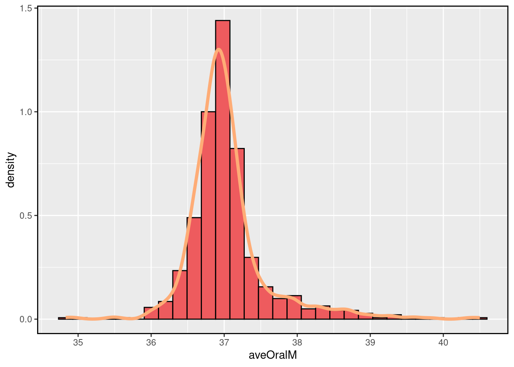
Visibly right-skewed, we can check the Q-Q plot and Kolmogorov-Smirnov test for normality:
df |> ggplot(aes(sample = aveOralM)) +
stat_qq(color = vir_col[8]) +
stat_qq_line(color = vir_col[14], lwd = 1) +
theme(panel.border = element_rect(color = "black",
linewidth = 1, fill = NA))
aveOralM_scaled <- df |>
mutate(aveOralM_scaled = (aveOralM - mean(aveOralM)) / sqrt(var(aveOralM))) |>
pull(aveOralM_scaled)
aveOralM_scaled |> ks.test("pnorm")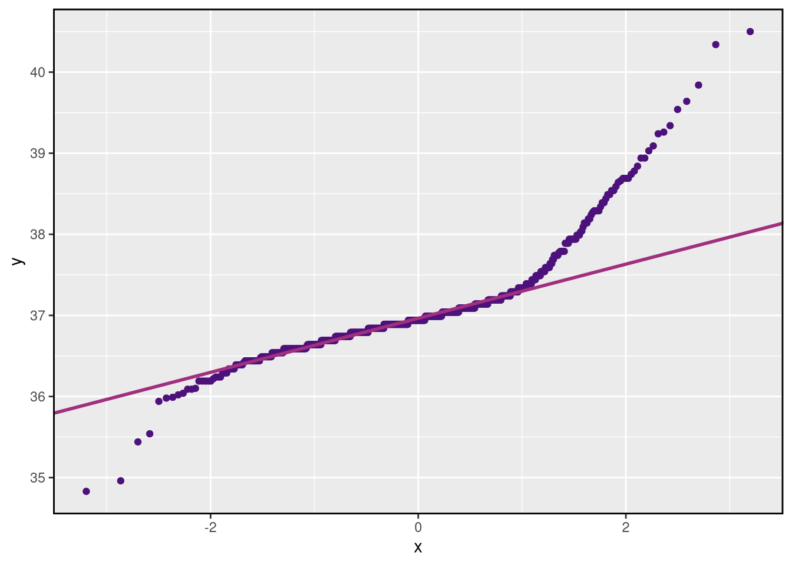
Asymptotic one-sample Kolmogorov-Smirnov test
data: aveOralM_scaled
D = 0.18469, p-value < 2.2e-16
alternative hypothesis: two-sidedThe test and the Q-Q plot confirm our suspicion of the data being non-gaussian.
Next let’s take a look at the basic structure:
df |>
select(c(Gender, Age, Ethnicity, Humidity, Distance, aveOralM)) |>
head(5) |>
kable()| Gender | Age | Ethnicity | Humidity | Distance | aveOralM |
|---|---|---|---|---|---|
| Female | 21-30 | White | 26 | 0.8 | 37.34 |
| Male | 18-20 | White | 27 | 0.8 | 37.04 |
| Female | 21-30 | White | 26 | 0.8 | 36.99 |
| Female | 18-20 | White | 30 | 0.8 | 36.49 |
| Female | 18-20 | Asian | 30 | 0.8 | 36.59 |
And at the original categorical variables:
character_variables <- df |>
select(where(is.character)) |>
colnames()
table(df[, character_variables[1]]) |> t() |> kable()| female | Female | male | Male |
|---|---|---|---|
| 13 | 422 | 27 | 259 |
table(df[, character_variables[2]]) |> t() |> kable()| >60 | 18-20 | 21-25 | 21-30 | 26-30 | 31-40 | 41-50 | 51-60 |
|---|---|---|---|---|---|---|---|
| 2 | 390 | 241 | 6 | 47 | 21 | 5 | 7 |
table(df[, character_variables[3]]) |> t() |> kable()| American Indian or Alaskan Native | Asian | Black or African-American | Hispanic/Latino | Multiracial | White |
|---|---|---|---|---|---|
| 2 | 182 | 106 | 46 | 31 | 354 |
Some of the \(Gender\) observations are incorrectly encoded. On top of that, the \(Age\) variable contains ambiguous observations within the group of 21-30 year olds. We are going to group those six people with the younger ones based on the empirical probability of them belonging to this group.
The next problem are the sparse amounts of older people that might prove difficult for the model when attempting to correctly estimate the effect of this group (the same goes for American Indian or Alaskan Natives).
categorical_fix <- function(df) {
# Gender fix
df <- df |>
mutate(Gender = case_when(
Gender %in% c("Female", "female") ~ "F",
Gender %in% c("Male", "male") ~ "M"
)
)
df$Gender <- factor(df$Gender)
# Age fix
df <- df |>
mutate(Age = case_when(
Age %in% c(">60", "31-40", "41-50", "51-60") ~ "31+",
Age == "21-30" ~ "21-25",
TRUE ~ Age
)
)
# Ethnicity - leave it out for now
df <- df |>
mutate(Ethnicity = case_when(
Ethnicity == "American Indian or Alaskan Native" ~ "Multiracial",
TRUE ~ Ethnicity
)
)
df$Ethnicity <- factor(df$Ethnicity)
return(df)
}
df <- categorical_fix(df)We should check the dataset for any NA values and the total sum of observations (rows) containing any empty values:
df |>
is.na() |>
colSums() |>
as.data.frame() |>
rename("Rows with NAs" = "colSums(is.na(df))") |>
filter(`Rows with NAs` > 0) |> kable()| Rows with NAs | |
|---|---|
| Age | 2 |
| Distance | 2 |
| aveAllR13_1 | 11 |
| canthiMax1 | 23 |
is.na(df) |>
table() |>
as.data.frame() |>
rename("Missing values" = Var1) |> kable()| Missing values | Freq |
|---|---|
| FALSE | 23755 |
| TRUE | 38 |
\(\rightarrow\) Implies NA values are unique for each row
Here are the observations with age as a missing value:
df |>
filter(if_any("Age", is.na)) |>
kable()| Gender | Age | Ethnicity | T_atm | Humidity | Distance | Max1R13_1 | Max1L13_1 | aveAllR13_1 | aveAllL13_1 | T_RC1 | T_RC_Dry1 | T_RC_Wet1 | T_RC_Max1 | T_LC1 | T_LC_Dry1 | T_LC_Wet1 | T_LC_Max1 | RCC1 | LCC1 | canthiMax1 | canthi4Max1 | T_FHCC1 | T_FHRC1 | T_FHLC1 | T_FHBC1 | T_FHTC1 | T_FH_Max1 | T_FHC_Max1 | T_Max1 | T_OR1 | T_OR_Max1 | aveOralM |
|---|---|---|---|---|---|---|---|---|---|---|---|---|---|---|---|---|---|---|---|---|---|---|---|---|---|---|---|---|---|---|---|---|
| F | NA | Black or African-American | 23.7 | 17 | 0.61 | 34.7175 | 35.0275 | 33.9125 | 34.6200 | 34.7700 | 34.675 | 34.7675 | 34.7975 | 35.0325 | 35.0100 | 34.96 | 35.0525 | 34.4825 | 34.860 | 35.050 | 35.0300 | 34.2775 | 33.8425 | 34.1175 | 34.010 | 34.3925 | 35.4225 | 34.8675 | 35.5900 | 34.7150 | 34.7325 | 37.04 |
| F | NA | White | 23.9 | 49 | 0.60 | 35.1825 | 35.5025 | 34.0650 | 34.8125 | 35.2675 | 35.130 | 35.2625 | 35.3050 | 35.4875 | 35.4875 | 35.41 | 35.5050 | 35.0275 | 35.195 | 35.505 | 35.4875 | 34.1950 | 34.1900 | 34.3075 | 34.195 | 34.2825 | 34.9950 | 34.6775 | 35.9375 | 35.7075 | 35.7225 | 36.89 |
There are 3 possibilities:
We will impute the rows for \(Age\) and \(Distance\). First we have to take a look at the overall structure using summary():
df |> select(Distance) |> summary() Distance
Min. : 0.5400
1st Qu.: 0.6000
Median : 0.6100
Mean : 0.7604
3rd Qu.: 0.7000
Max. :79.0000
NA's :2 df |> select(Age) |> table() |> t() |> kable()| 18-20 | 21-25 | 26-30 | 31+ |
|---|---|---|---|
| 390 | 247 | 47 | 35 |
As we can see, one of the observations (\(Distance = 79\)) falls entirely outside its feasible range. We will, alongside with other faulty values, remove it later in the data-cleaning process.
df |>
filter(Distance < 10) |>
ggplot(aes(x = Distance, y = after_stat(density))) +
geom_histogram(fill = vir_col[8], color = "black", binwidth = 0.05) +
geom_density(color = vir_col[14], lwd = 1.5, bw = 0.02) +
theme(panel.border = element_rect(color = "black",
linewidth = 1, fill = NA))
df |>
ggplot(aes(x = Age)) +
geom_bar(fill = vir_col[17], color = "black") +
theme(panel.border = element_rect(color = "black",
linewidth = 1, fill = NA))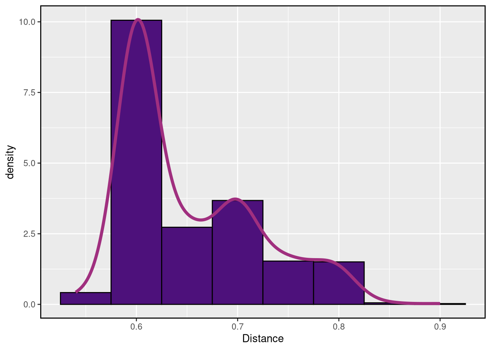
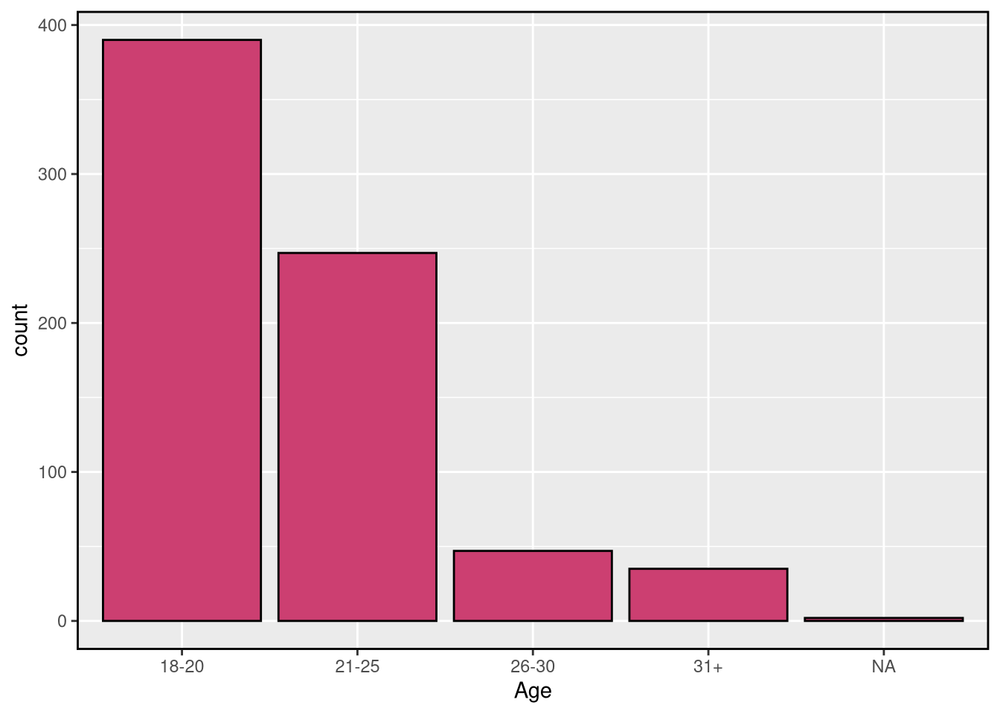
Due to the observed skewness we will impute \(Distance\) with median. For the \(Age\) variable, the most occurring value will be used (that being the cohort of 18-20 year olds).
distance_no_extremes <- df |>
filter(Distance < 10 & !is.na(Distance)) |>
pull(Distance)
most_occuring_age <- df |>
select(Age) |>
table() |>
as.data.frame() |>
arrange(desc(Freq)) |>
pull(Age) %>%
.[1] |>
as.character()
df <- df |>
mutate(
Distance = ifelse(
Distance > 10 | is.na(Distance),
median(distance_no_extremes),
Distance
),
Age = ifelse(
is.na(Age),
most_occuring_age,
Age
)
)
df$Age <- factor(df$Age)df |>
ggplot(aes(x = aveAllR13_1, y = after_stat(density))) +
geom_histogram(fill = vir_col[20], color = "black", bins = 30) +
geom_density(color = vir_col[24], lwd = 1.5) +
theme(panel.border = element_rect(color = "black",
linewidth = 1, fill = NA))
df |>
ggplot(aes(x = canthiMax1, y = after_stat(density))) +
geom_histogram(fill = vir_col[27], color = "black", bins = 30) +
geom_density(color = vir_col[30], lwd = 1.5) +
theme(panel.border = element_rect(color = "black",
linewidth = 1, fill = NA))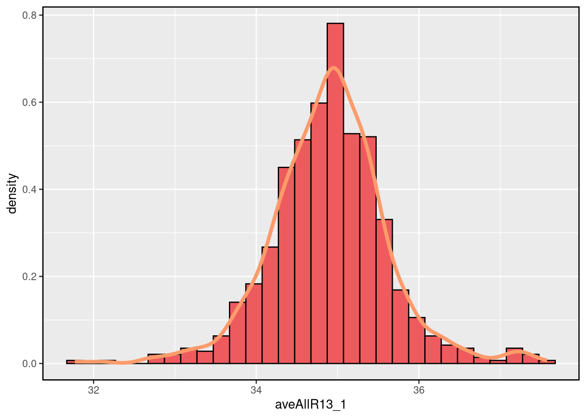
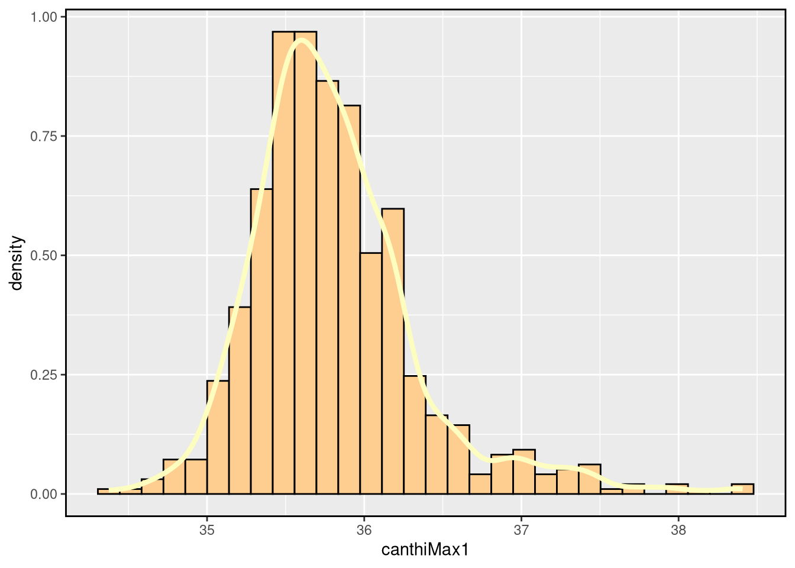
Due to these variables having more missing observations, we should impute taking into consideration other relationships they might have.
df |>
ggplot() +
geom_histogram(aes(x = aveAllR13_1, y = after_stat(density), fill = Gender, alpha = Gender), color = "black", bins = 30, position = "identity") +
geom_density(aes(x = aveAllR13_1, color = Gender), lwd = 1.5) +
scale_color_manual(values = c("F" = vir_col[22], "M" = vir_col[9])) +
scale_alpha_manual(values = c("F" = 1, "M" = 0.75)) +
scale_fill_manual(values = c("F" = vir_col[20], "M" = vir_col[7])) +
theme(panel.border = element_rect(color = "black",
linewidth = 1, fill = NA))
df |>
ggplot() +
geom_boxplot(aes(y = aveAllR13_1, fill = Age)) +
scale_fill_manual(values = c("18-20" = vir_col[26],
"21-25" = vir_col[20], "26-30" = vir_col[12], "31+" = vir_col[5])) +
theme(panel.border = element_rect(color = "black",
linewidth = 1, fill = NA))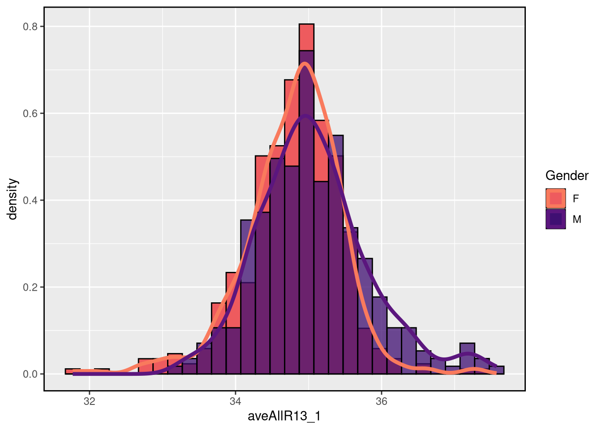
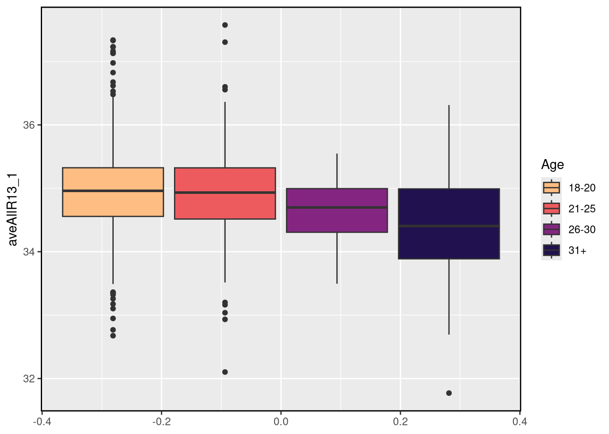
Males do seem to be a bit more right-skewed with the values, implying their values of \(aveAllR13\_1\) are higher. On the boxplot, it is clear that aging has a negative effect on the variable, though it is also important to realize that the classes have varying counts of observations, with the last two groups being only a small fraction of the first ones.
We can also take a look at the modelled variable scatterplot in combination with the \(aveAllR13\_1\) to find out their positive correlation:
df |>
ggplot(aes(x = aveAllR13_1, y = aveOralM, color = Gender)) +
geom_point(cex = 1.65) +
scale_color_manual(values = c("F" = vir_col[20], "M" = vir_col[5])) +
geom_smooth(method = "lm", formula = y ~ x, se = FALSE) +
theme(panel.border = element_rect(color = "black",
linewidth = 1, fill = NA))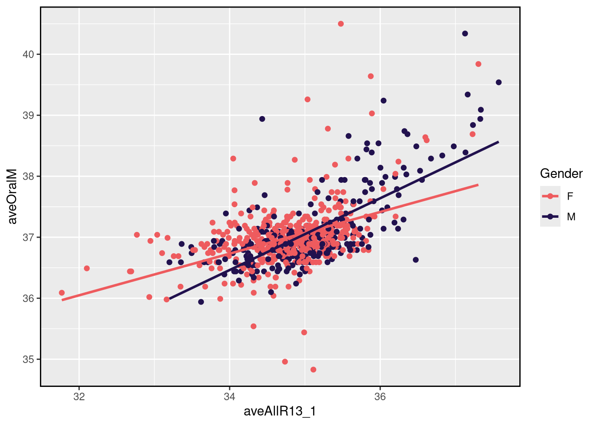
Using a linear model we estimated the trend of both sexes, with males being more positively correlated to the outcome on the basis of \(aveAllR13\_1\).
We are also able to see some extreme values, with two people having internal oral temperature of more than \(40 ^\circ C\), which is possible, but highly unlikely.
df |>
ggplot() +
geom_point(aes(x = aveAllR13_1, y = aveOralM, color = Age),cex = 1.65) +
scale_color_manual(values = c("18-20" = vir_col[26],
"21-25" = vir_col[20], "26-30" = vir_col[12], "31+" = vir_col[5])) +
theme(panel.border = element_rect(color = "black",
linewidth = 1, fill = NA))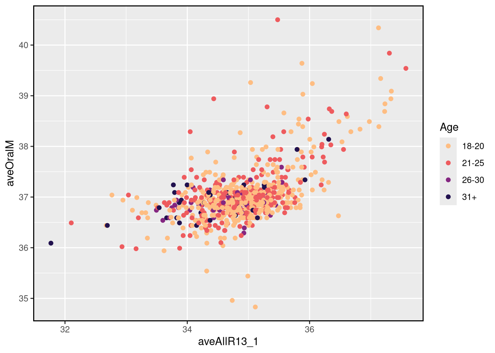
Based on these observations, we will impute the values using the medians of \(aveAllR13\_1\) based on their \(Gender\).
df |>
filter(!is.na(aveAllR13_1)) |>
group_by(Gender) |>
summarise(
mean = round(mean(aveAllR13_1), 3),
median = round(median(aveAllR13_1), 3)
) |> kable()| Gender | mean | median |
|---|---|---|
| F | 34.798 | 34.868 |
| M | 35.059 | 34.989 |
medians_aveAllR13_1 <- df |>
group_by(Gender) |>
summarise(
median_value = median(aveAllR13_1, na.rm = TRUE)
)
female_median_aveAllR13_1 <- medians_aveAllR13_1 |>
filter(Gender == "F") |> pull(median_value)
male_median_aveAllR13_1 <- medians_aveAllR13_1 |>
filter(Gender == "M") |> pull(median_value)
df <- df |>
mutate(
aveAllR13_1 = ifelse(
is.na(aveAllR13_1),
ifelse(
Gender == "M",
male_median_aveAllR13_1,
female_median_aveAllR13_1
),
aveAllR13_1
)
)The variable \(canthiMax1\) will be imputed in a similar fashion (taking into account that even 23 missing values still make up only a measly 3 % of the entire dataset).
df |>
ggplot() +
geom_boxplot(aes(y = canthiMax1, fill = Gender)) +
scale_fill_manual(values = c("F" = vir_col[20], "M" = vir_col[5])) +
theme(panel.border = element_rect(color = "black",
linewidth = 1, fill = NA))
df |>
ggplot() +
geom_point(aes(x = canthiMax1, y = aveOralM, color = Age),cex = 1.65) +
scale_color_manual(values = c("18-20" = vir_col[26],
"21-25" = vir_col[20], "26-30" = vir_col[12], "31+" = vir_col[5])) +
theme(panel.border = element_rect(color = "black",
linewidth = 1, fill = NA))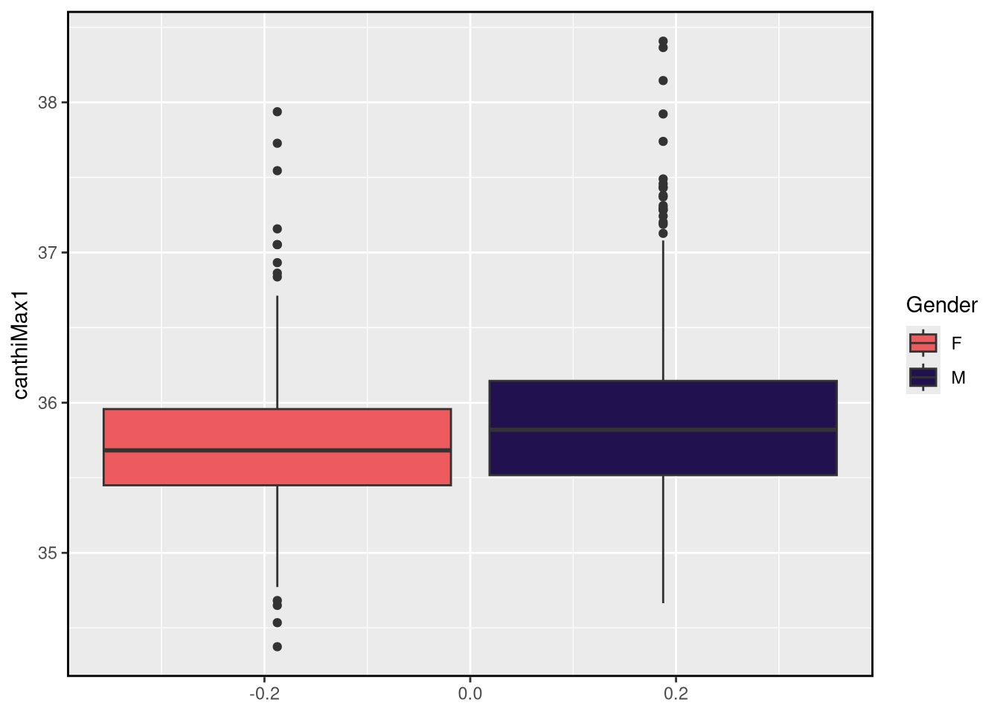

The variable \(canthiMax1\) is a bit more right-skewed, so using median would be a wiser choice compared to the mean.
df |>
filter(!is.na(canthiMax1)) |>
group_by(Gender) |>
summarise(
mean = round(mean(canthiMax1), 3),
median = round(median(canthiMax1), 3)
) |> kable()| Gender | mean | median |
|---|---|---|
| F | 35.716 | 35.682 |
| M | 35.945 | 35.820 |
medians_canthiMax1 <- df |>
group_by(Gender) |>
summarise(
median_value = median(canthiMax1, na.rm = TRUE)
)
female_median_canthiMax1 <- medians_canthiMax1 |>
filter(Gender == "F") |> pull(median_value)
male_median_canthiMax1 <- medians_canthiMax1 |>
filter(Gender == "M") |> pull(median_value)
df <- df |>
mutate(
canthiMax1 = ifelse(
is.na(canthiMax1),
ifelse(
Gender == "M",
male_median_canthiMax1,
female_median_canthiMax1
),
canthiMax1
)
)We have already found some outliers in the variable \(Distance\). Now we have to take a look at other variables possibly being encoded wrongly.
df |> ggplot() +
geom_histogram(aes(x = T_LC_Wet1), color = "black", fill = vir_col[8], bins = 30) +
theme(panel.border = element_rect(color = "black",
linewidth = 1, fill = NA))
df |> ggplot() +
geom_histogram(aes(x = T_FHTC1), color = "black", fill = vir_col[13], bins = 30) +
theme(panel.border = element_rect(color = "black",
linewidth = 1, fill = NA))
df |> ggplot() +
geom_histogram(aes(x = T_FHC_Max1), color = "black", fill = vir_col[18], bins = 30) +
theme(panel.border = element_rect(color = "black",
linewidth = 1, fill = NA))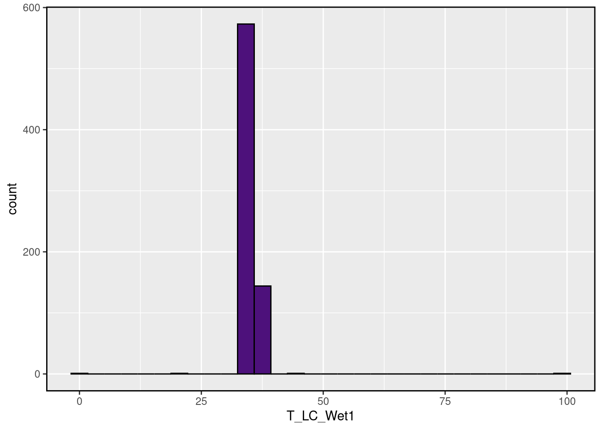
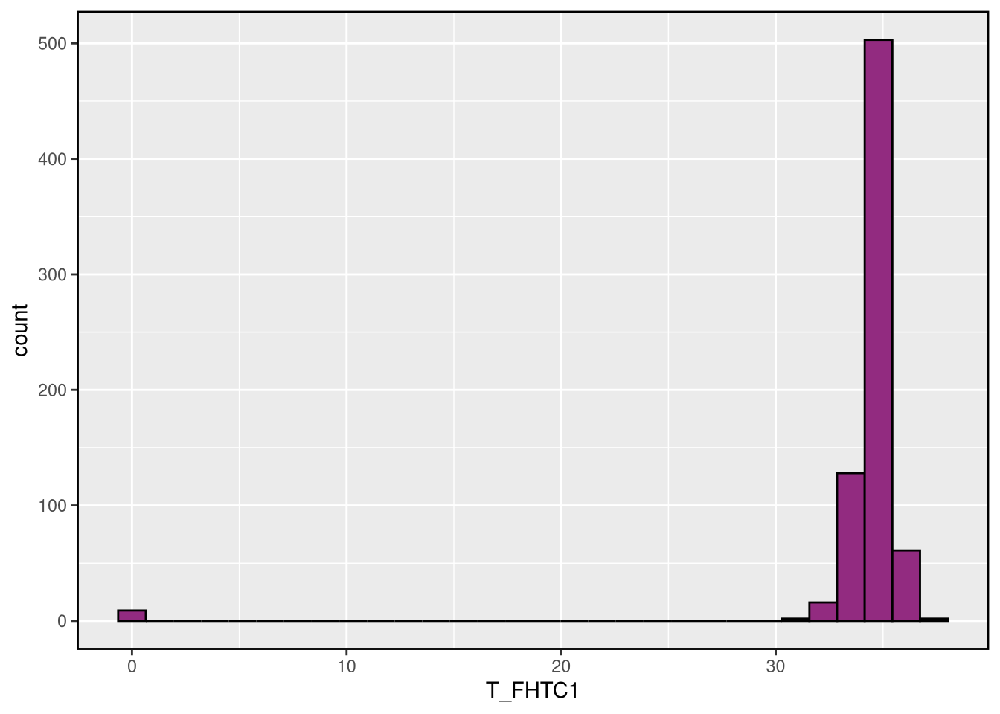
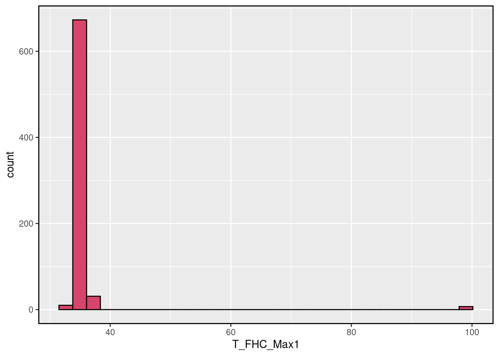
The histograms show big clusters of observations around a specific interval, with only a few lying far away. These outlying points can almost certainly be classified as error terms - for example \(T\_FHC\_Max1\) = \(100^\circ C\) indicating boiling temperatures measured on the forehead.
To be fully confident in the validity of our data, we will remove all observations of \(Distance\), \(T\_LC\_Wet1\) and \(T\_FHC\_Max1\) without attempting to impute them, since there is a significant issue with how they were originally obtained.
In addition, since the \(T\_FHTC1\) variable contains nine observations with a value of 0, discarding them would be unnecessary; they can be reasonably imputed using the mean of the other average temperature measurements from the different forehead locations (as they are all non-zero).
df <- df |>
filter(T_LC_Wet1 > 25 & T_LC_Wet1 < 40)
df <- df |>
rowwise() |>
mutate(T_FHTC1 = ifelse(
T_FHTC1 == 0,
mean(c(T_FHCC1, T_FHRC1, T_FHLC1, T_FHBC1)),
T_FHTC1
)
) |>
ungroup() |>
as.data.frame()
df <- df |>
filter(T_FHC_Max1 < 40)Before selecting a model, we should examine the structure of the variables themselves, paying attention to potential multicollinearity, which can inflate standard errors and lead to incorrect confidence intervals of our predicted coefficients \(\widehat{\beta}\).
cor_matrix <- df |>
select(where(is.numeric)) |>
cor() |>
round(1)
cor_matrix |>
ggcorrplot(
type="lower",
lab=TRUE,
lab_size=3,
lab_col="black",
outline.color = "black"
) +
scale_fill_viridis_c(
option="magma",
limits=c(-1, 1)
) +
theme_gray() +
labs(x = NULL, y = NULL) +
theme(panel.border = element_rect(color = "black",
linewidth = 1, fill = NA),
axis.text.x = element_text(angle = 45, hjust = 1))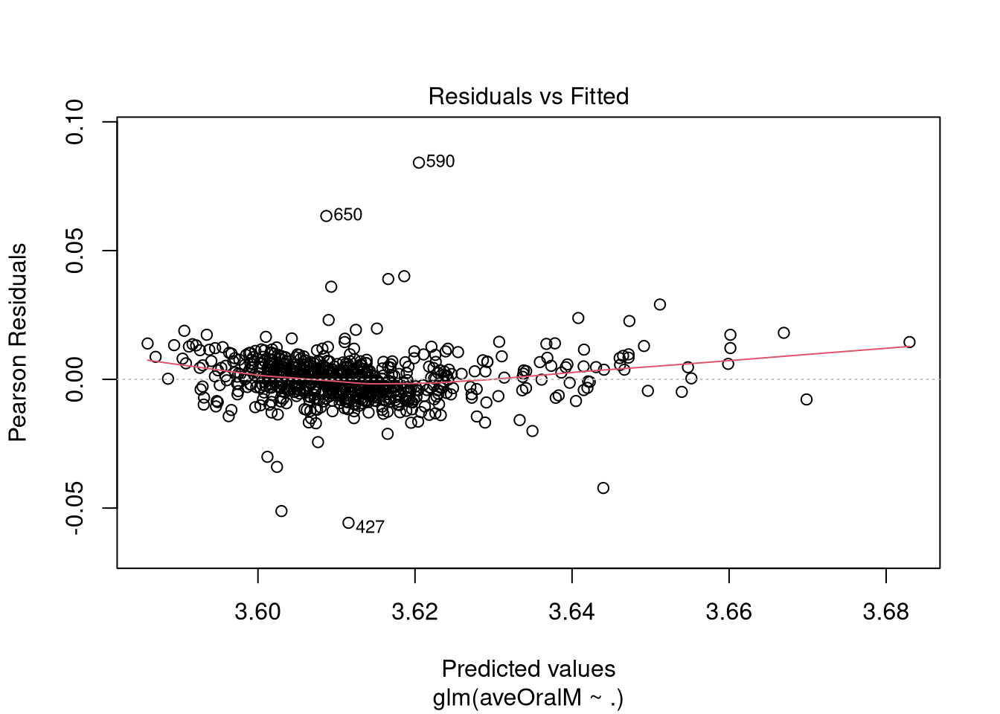
\(aveOralM\) is in the right-most column of the matrix. The correlations in the plot are rounded to the nearest decimal, meaning that they aren’t actually zeros or ones.
numeric_variables <- df |>
select(-aveOralM) |>
select(where(is.numeric)) |>
colnames()
pca_result <- df |>
select(all_of(numeric_variables)) |>
prcomp(center = TRUE, scale. = TRUE)
pca_result |> fviz_pca_biplot(
geom.ind = "point",
col.ind = "cos2",
gradient.cols = vir_col,
pointsize = 1.5,
repel = TRUE,
geom.var = c("text", "arrow"),
col.var = "black",
legend.title = list(color = "Explained by dim")
) +
theme_gray() +
theme(panel.border = element_rect(color = "black",
linewidth = 1, fill = NA)) +
labs(title = NULL)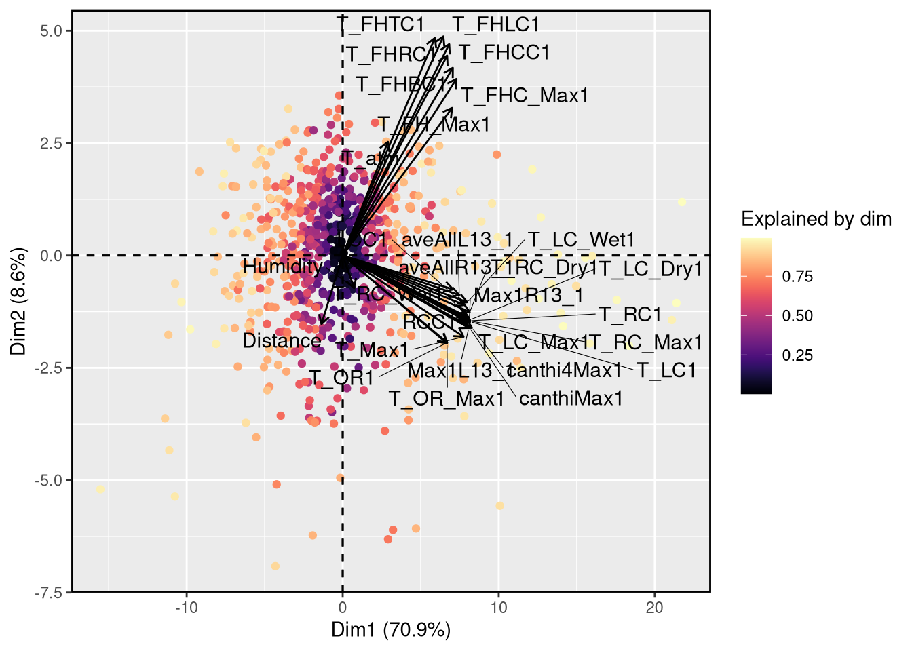
This PCA plot shows that ~\(80 \%\) of the variance is explained by these two dimensions. The arrows form two disctinct ‘clusters’, representing mainly the canthus area of the face (lower arrows) and the forehead area (higher arrows).
The most straightforward interpretation of the first dimension is the overall facial temperature, with the canthus-related variables accounting for a slightly larger share of the variance. The second dimension appears to capture the contrast or difference between the two specific facial regions.
The ambient temperature also had a strong effect on the facial temperature, affecting mainly the forehead area. On the other hand, the distance variable had a small negative effect on the temperature, with the correlation matrix confirming this effect.
pca_result |>
fviz_pca_biplot(
geom.ind = "none",
repel = TRUE,
geom.var = c("text", "arrow"),
col.var = "black",
labelsize = 4,
) +
theme_gray() +
labs(title = NULL) +
theme(panel.border = element_rect(color = "black",
linewidth = 1, fill = NA))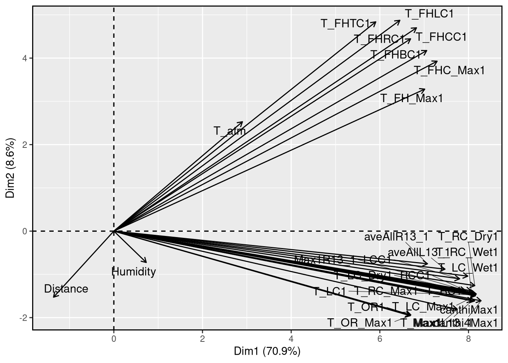
The last plot showcases the MCA of categorical variables, where points closer to the center (0,0) can be interpreted as more ‘ordinary’ or expected, whereas categories such as Multiracial, 31+ and 26-30 deviate more noticeably from the rest.
It’s important to note that only a very small portion of the overall variance is explained, so the results should be interpreted with caution.
active_vars <- df |>
select(where(is.factor))
res.mca <- MCA(
active_vars,
graph = FALSE
)
res.mca |> fviz_mca_biplot(
repel = TRUE,
geom.ind = "none",
col.var = "name",
pointsize = 5,
labelsize = 4,
palette = c(vir_col[7], vir_col[7], vir_col[7], vir_col[7],
vir_col[14], vir_col[14], vir_col[21], vir_col[14], vir_col[21],
vir_col[14], vir_col[14])
) +
theme_gray() +
theme(panel.border = element_rect(color = "black",
linewidth = 1, fill = NA),
legend.position = "none") +
labs(title = NULL)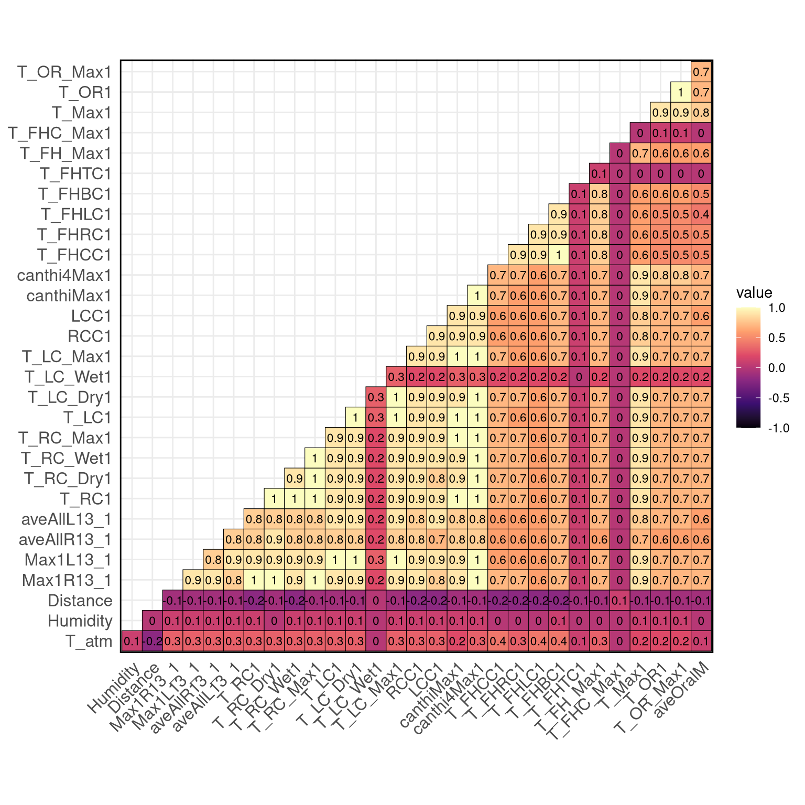
First, we will fit a simple linear model using all the existing variables. Next, we will fit a Gamma GLM with a log link for easier interpretability (the canonical link for Gamma is the inverse). We chose this model because the distribution of \(aveOralM\) is slightly right-skewed and contains only positive values.
Given the high values in the correlation matrix and the clustering of variables in the PCA plot, models like these will almost certainly suffer from multicollinearity.
full_lm <- lm(data = df, formula = aveOralM ~ .)
full_glm_gamma <- glm(data = df, formula = aveOralM ~ ., family = Gamma(link = "log"))
vif(full_lm) |> head(11) |> t() |> kable()| Gender | Age | Ethnicity | T_atm | Humidity | Distance | Max1R13_1 | Max1L13_1 | aveAllR13_1 | aveAllL13_1 | T_RC1 | |
|---|---|---|---|---|---|---|---|---|---|---|---|
| GVIF | 1.276933 | 1.223383 | 1.832899 | 1.369957 | 1.127224 | 1.235586 | 169.26317 | 101.3647 | 8.411848 | 10.647449 | 3320.29092 |
| Df | 1.000000 | 3.000000 | 4.000000 | 1.000000 | 1.000000 | 1.000000 | 1.00000 | 1.0000 | 1.000000 | 1.000000 | 1.00000 |
| GVIF^(1/(2*Df)) | 1.130014 | 1.034174 | 1.078679 | 1.170452 | 1.061708 | 1.111569 | 13.01012 | 10.0680 | 2.900319 | 3.263043 | 57.62197 |
The model clearly suffers from multicollinearity and is therefore unusable. The Gamma GLM exhibits the same issue, overfitting the data and reaching an AIC of approximately \(−4500\). We can take a look at the plot of the fitted values to residuals (the deviance residuals for GLM).
models_df <- data.frame(
fitted_lm = full_lm$fitted.values,
residuals_lm = full_lm$residuals,
fitted_glm = full_glm_gamma$fitted.values,
residuals_glm_dev = resid(full_glm_gamma, type = "deviance")
)
models_df |>
ggplot(aes(x = fitted_lm, y = residuals_lm)) +
geom_point(color = vir_col[10]) +
geom_smooth(formula = y ~ x, se = FALSE, color = vir_col[5]) +
geom_hline(yintercept = 0, linetype = "dashed", color = vir_col[10]) +
labs(x = "Fitted values", y = "Residuals") +
theme(panel.border = element_rect(color = "black",
linewidth = 1, fill = NA))
models_df |>
ggplot(aes(x = fitted_glm, y = residuals_glm_dev)) +
geom_point(color = vir_col[20]) +
geom_smooth(formula = y ~ x, se = FALSE, color = vir_col[15]) +
geom_hline(yintercept = 0, linetype = "dashed", color = vir_col[10]) +
labs(x = "Fitted values", y = "Deviance residuals") +
theme(panel.border = element_rect(color = "black",
linewidth = 1, fill = NA))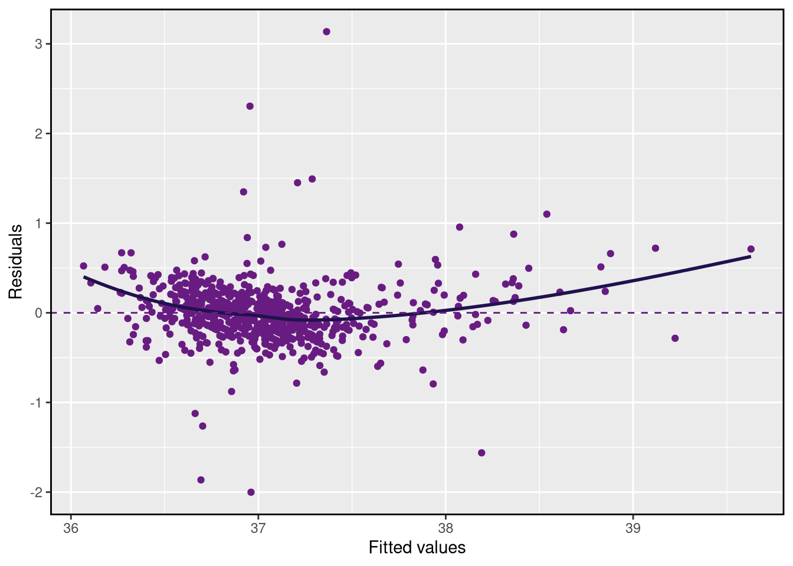
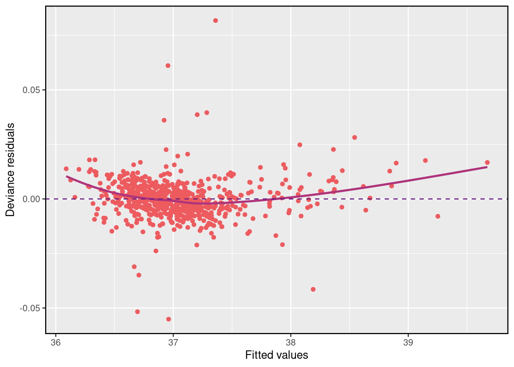
We observed that the results of the two models are highly comparable, suggesting that they capture the behavior of the variable in a similar way.
From this point onwards, we will focus on the Gamma GLM. An important first step is to one-hot encode the categorical variables (create dummy variables), which allows us to freely choose reference levels and remove specific categories if we deem it appropriate.
We chose the model: \[ \begin{aligned} \log(\mu) = \beta_0 &+ \beta_1 \cdot Gender_{Female} \\ &+ \beta_2 \cdot Age_{18-20} + \dots + \beta_4 \cdot Age_{31+} \\ &+ \beta_5 \cdot Ethnicity_{Asian} + \dots + \beta_8 \cdot Ethnicity_{Multiracial} \\ &+ \beta_9 \cdot T_{atm} + \beta_{10} \cdot Humidity + \beta_{11} \cdot Distance \\ &+ \beta_{12} \cdot T_{OR1} + \beta_{13} \cdot T_{Max1} + \beta_{14} \cdot T_{FHCC1} + \beta_{15} \cdot canthi4Max1, \end{aligned} \]
as we aimed to incorporate all categorical variables, we chose male gender, the 21–25 age cohort, and white ethnicity as the reference categories. Next, we added extraneous factors such as ambient temperature, humidity, and distance. Finally, we included the most important variables - the actual temperatures. Our selection was guided by the correlation matrix and PCA, which helped to identify the most important clusters without including too many variables - preserving interpretability and avoiding multicollinearity.
| Variable | Description |
|---|---|
| \(T_{OR1}\) | Average temperature of the mouth region |
| \(T_{Max1}\) | Maximum temperature of the entire face |
| \(T_{FHCC1}\) | Average temperature within the centre of the forehead |
| \(canthi4Max1\) | Average temperature within the canthi area |
Our approach was to focus on the average temperatures, as they are less affected by extreme values, while also accounting for the maximum values through \(T_{Max1}\). The selected average temperatures represent the three most important and distinguishable regions of the face: the mouth region, the forehead, and the area in between. On top of that, they also represent the 4 most correlated variables to the modelled variable.
df_dummies <- df
df_dummies <- dummy_cols(df_dummies, select_columns = "Ethnicity", remove_first_dummy = FALSE)
df_dummies <- dummy_cols(df_dummies, select_columns = "Age", remove_first_dummy = FALSE)
df_dummies <- dummy_cols(df_dummies, select_columns = "Gender", remove_first_dummy = FALSE)
df_dummies <- df_dummies |>
rename(
Ethnicity_Black = `Ethnicity_Black or African-American`,
Ethnicity_Hispanic = `Ethnicity_Hispanic/Latino`
)
optim_glm_gamma <- glm(data = df_dummies,
formula = aveOralM ~ Gender_F + `Age_18-20` + `Age_26-30` + `Age_31+` +
Ethnicity_Asian + Ethnicity_Black + Ethnicity_Hispanic + Ethnicity_Multiracial +
T_atm + Humidity + Distance + T_OR1 + T_Max1 + T_FHCC1 + canthi4Max1,
family = Gamma(link = "log"))
vif(optim_glm_gamma) |> t() |> kable()| Gender_F | Age_18-20 |
Age_26-30 |
Age_31+ |
Ethnicity_Asian | Ethnicity_Black | Ethnicity_Hispanic | Ethnicity_Multiracial | T_atm | Humidity | Distance | T_OR1 | T_Max1 | T_FHCC1 | canthi4Max1 |
|---|---|---|---|---|---|---|---|---|---|---|---|---|---|---|
| 1.137449 | 1.215886 | 1.136858 | 1.111347 | 1.256325 | 1.18529 | 1.072839 | 1.069745 | 1.254876 | 1.066229 | 1.119952 | 6.299619 | 17.12322 | 2.023822 | 9.571535 |
summary(optim_glm_gamma)
Call:
glm(formula = aveOralM ~ Gender_F + `Age_18-20` + `Age_26-30` +
`Age_31+` + Ethnicity_Asian + Ethnicity_Black + Ethnicity_Hispanic +
Ethnicity_Multiracial + T_atm + Humidity + Distance + T_OR1 +
T_Max1 + T_FHCC1 + canthi4Max1, family = Gamma(link = "log"),
data = df_dummies)
Coefficients:
Estimate Std. Error t value Pr(>|t|)
(Intercept) 2.766e+00 2.763e-02 100.092 < 2e-16 ***
Gender_F 9.062e-04 7.751e-04 1.169 0.24276
`Age_18-20` -1.199e-03 7.870e-04 -1.523 0.12821
`Age_26-30` -1.053e-03 1.524e-03 -0.691 0.48974
`Age_31+` -2.174e-03 1.755e-03 -1.239 0.21571
Ethnicity_Asian 2.628e-03 9.157e-04 2.870 0.00424 **
Ethnicity_Black 1.939e-03 1.099e-03 1.764 0.07812 .
Ethnicity_Hispanic 7.721e-04 1.496e-03 0.516 0.60585
Ethnicity_Multiracial 1.288e-03 1.746e-03 0.738 0.46101
T_atm -1.473e-03 2.968e-04 -4.962 8.79e-07 ***
Humidity -4.864e-07 2.771e-05 -0.018 0.98600
Distance -1.066e-02 5.715e-03 -1.865 0.06254 .
T_OR1 2.658e-03 1.584e-03 1.678 0.09379 .
T_Max1 1.790e-02 2.944e-03 6.079 1.99e-09 ***
T_FHCC1 -1.098e-04 7.538e-04 -0.146 0.88424
canthi4Max1 4.208e-03 2.050e-03 2.053 0.04048 *
---
Signif. codes: 0 '***' 0.001 '**' 0.01 '*' 0.05 '.' 0.1 ' ' 1
(Dispersion parameter for Gamma family taken to be 8.968912e-05)
Null deviance: 0.163585 on 709 degrees of freedom
Residual deviance: 0.061886 on 694 degrees of freedom
AIC: 540.9
Number of Fisher Scoring iterations: 3The summary shows many statistically insignificant variables. We will remove them from the model step by step, starting with those with the highest p-values. The model’s AIC is now a more realistic \(540.9\), which we will attempt to further reduce.
optim_glm_gamma <- glm(
data = df_dummies,
formula = aveOralM ~ Ethnicity_Asian + Ethnicity_Black + T_atm + Distance + T_OR1 + T_Max1 + canthi4Max1,
family = Gamma(link = "log")
)
summary(optim_glm_gamma)
Call:
glm(formula = aveOralM ~ Ethnicity_Asian + Ethnicity_Black +
T_atm + Distance + T_OR1 + T_Max1 + canthi4Max1, family = Gamma(link = "log"),
data = df_dummies)
Coefficients:
Estimate Std. Error t value Pr(>|t|)
(Intercept) 2.7691101 0.0267472 103.529 < 2e-16 ***
Ethnicity_Asian 0.0023984 0.0008687 2.761 0.00591 **
Ethnicity_Black 0.0016842 0.0010665 1.579 0.11477
T_atm -0.0014980 0.0002829 -5.295 1.59e-07 ***
Distance -0.0105365 0.0056080 -1.879 0.06068 .
T_OR1 0.0026075 0.0015561 1.676 0.09426 .
T_Max1 0.0184760 0.0028677 6.443 2.18e-10 ***
canthi4Max1 0.0034855 0.0018606 1.873 0.06144 .
---
Signif. codes: 0 '***' 0.001 '**' 0.01 '*' 0.05 '.' 0.1 ' ' 1
(Dispersion parameter for Gamma family taken to be 8.935676e-05)
Null deviance: 0.163585 on 709 degrees of freedom
Residual deviance: 0.062351 on 702 degrees of freedom
AIC: 530.22
Number of Fisher Scoring iterations: 3The model has become much simpler, and the AIC has improved slightly. It is important to check for high-leverage extreme values that could be distorting the model. Cook’s distance can be used for this purpose.
cooks_df <- data.frame(
index = 1:length(cooks.distance(optim_glm_gamma)),
cooks_distance = cooks.distance(optim_glm_gamma),
qq_resid = qresid(optim_glm_gamma),
theoretical_q = qqnorm(qresid(optim_glm_gamma), plot.it = FALSE)$x
)
cook_threshold <- 8 / (dim(df)[1] - 2 * (dim(df)[2] - 1))
cooks_df |>
ggplot(aes(x = index, y = cooks_distance)) +
geom_point(color = vir_col[10]) +
geom_hline(yintercept = cook_threshold, linetype = "dotdash", color = vir_col[15], linewidth = 0.8) +
geom_point(data = subset(cooks_df, cooks_distance > cook_threshold),
color = vir_col[20], size = 3, shape = 21, fill = vir_col[20], alpha = 0.6) +
geom_text(data = subset(cooks_df, cooks_distance > cook_threshold), aes(label = index), vjust = -1, hjust = 1) +
labs(
x = "Observation Index",
y = "Cook's Distance"
) +
theme(panel.border = element_rect(color = "black",
linewidth = 1, fill = NA))
cooks_df |>
ggplot() +
geom_text(
data = subset(cooks_df, cooks_distance > cook_threshold),
aes(x = theoretical_q, y = qq_resid, label = index),
vjust = -1, hjust = 1
) +
stat_qq_line(aes(sample = qq_resid), color = vir_col[15], lwd = 1) +
stat_qq(aes(sample = qq_resid), color = vir_col[10]) +
geom_point(data = subset(cooks_df, cooks_distance > cook_threshold),
aes(x = theoretical_q, y = qq_resid),
color = vir_col[20], size = 3,
fill = vir_col[20], alpha = 0.6) +
theme(panel.border = element_rect(color = "black", linewidth = 1, fill = NA))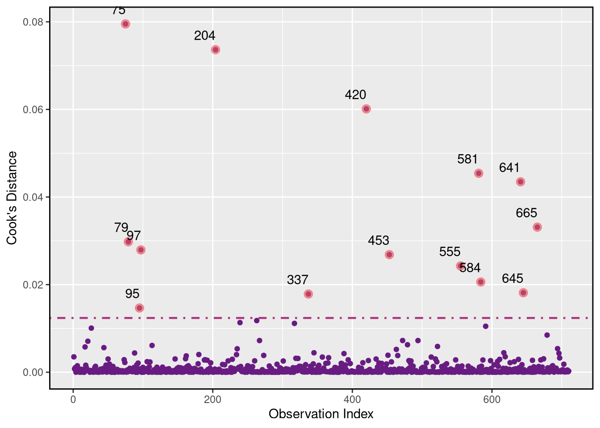
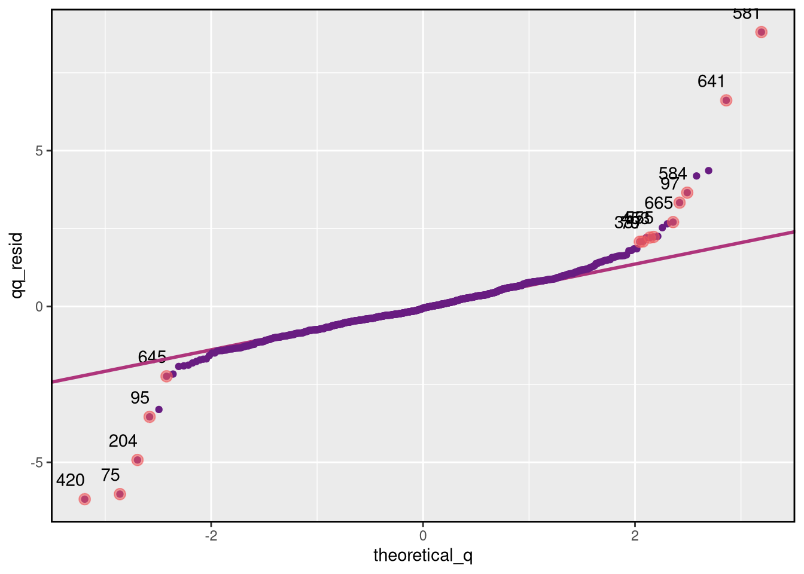
We highlighted the observations with sufficiently high Cook’s distance and plotted the quantized residuals on a Q–Q plot. The results clearly indicate the presence of high-leverage points that are degrading the overall quality of the model.
Based on this observation, we added a dummy variable to account for the extreme values in the model. If its coefficient turns out to be statistically significant, it would indicate that these observations exert a specific influence on the response that the original model was unable to capture.
df_dummies$high_influence <- cooks_df$cooks_distance > cook_threshold
optim_outliers_glm_gamma <- glm(
data = df_dummies,
formula = aveOralM ~ Ethnicity_Asian + T_atm + Distance + T_OR1 + T_Max1 + canthi4Max1 + high_influence,
family = Gamma(link = "log"))
summary(optim_outliers_glm_gamma)
Call:
glm(formula = aveOralM ~ Ethnicity_Asian + T_atm + Distance +
T_OR1 + T_Max1 + canthi4Max1 + high_influence, family = Gamma(link = "log"),
data = df_dummies)
Coefficients:
Estimate Std. Error t value Pr(>|t|)
(Intercept) 2.7960142 0.0271907 102.830 < 2e-16 ***
Ethnicity_Asian 0.0019744 0.0008268 2.388 0.017203 *
T_atm -0.0015228 0.0002802 -5.435 7.56e-08 ***
Distance -0.0106451 0.0055521 -1.917 0.055605 .
T_OR1 0.0023652 0.0015288 1.547 0.122286
T_Max1 0.0181288 0.0028167 6.436 2.27e-10 ***
canthi4Max1 0.0033500 0.0018103 1.851 0.064648 .
high_influenceTRUE 0.0090092 0.0026172 3.442 0.000611 ***
---
Signif. codes: 0 '***' 0.001 '**' 0.01 '*' 0.05 '.' 0.1 ' ' 1
(Dispersion parameter for Gamma family taken to be 8.761706e-05)
Null deviance: 0.163585 on 709 degrees of freedom
Residual deviance: 0.061534 on 702 degrees of freedom
AIC: 520.86
Number of Fisher Scoring iterations: 3The coefficient is highly statistically significant, indicating that these outliers do carry an additional information that the model cannot see. Unfortunately, we did not find a cleaner solution than removing those specific observations, allowing the model to focus on the relationships it is actually able to capture.
df_dummies_no_out <- df_dummies |>
filter(!(cooks_df$cooks_distance > cook_threshold))
optim_no_out_glm_gamma <- glm(
formula = aveOralM ~ Ethnicity_Asian + Ethnicity_Black + T_atm + T_Max1 + T_OR1 + canthi4Max1,
family = Gamma(link = "log"),
data = df_dummies_no_out
)
summary(optim_no_out_glm_gamma)
Call:
glm(formula = aveOralM ~ Ethnicity_Asian + Ethnicity_Black +
T_atm + T_Max1 + T_OR1 + canthi4Max1, family = Gamma(link = "log"),
data = df_dummies_no_out)
Coefficients:
Estimate Std. Error t value Pr(>|t|)
(Intercept) 2.8077208 0.0216292 129.811 < 2e-16 ***
Ethnicity_Asian 0.0025638 0.0006700 3.827 0.000142 ***
Ethnicity_Black 0.0022255 0.0008371 2.659 0.008031 **
T_atm -0.0014628 0.0002154 -6.791 2.41e-11 ***
T_Max1 0.0153953 0.0022479 6.849 1.65e-11 ***
T_OR1 0.0034791 0.0011992 2.901 0.003834 **
canthi4Max1 0.0044183 0.0014546 3.038 0.002475 **
---
Signif. codes: 0 '***' 0.001 '**' 0.01 '*' 0.05 '.' 0.1 ' ' 1
(Dispersion parameter for Gamma family taken to be 5.265036e-05)
Null deviance: 0.113768 on 695 degrees of freedom
Residual deviance: 0.036172 on 689 degrees of freedom
AIC: 152.25
Number of Fisher Scoring iterations: 3After fitting the model on the new data and removing the insignificant covariates, the AIC has gotten significantly better, more than halving it’s entire value to \(152.25\).
models_no_out_df = data.frame(
optim_fitted_glm = optim_no_out_glm_gamma$fitted.values,
optim_residuals_glm_dev = resid(optim_no_out_glm_gamma, type = "deviance")
)
models_no_out_df |>
ggplot(aes(x = optim_fitted_glm, y = optim_residuals_glm_dev)) +
geom_point(color = vir_col[10]) +
geom_smooth(formula = y ~ x, se = FALSE, color = vir_col[5]) +
geom_hline(yintercept = 0, linetype = "dashed", color = vir_col[5]) +
labs(x = "Fitted values", y = "Deviance residuals") +
theme(panel.border = element_rect(color = "black",
linewidth = 1, fill = NA))
mean_T_OR1 <- mean(df_dummies_no_out$T_OR1)
mean_canthi4Max1 <- mean(df_dummies_no_out$canthi4Max1)
df_dummies_no_out <- df_dummies_no_out |>
mutate(
T_OR1_c = T_OR1 - mean_T_OR1,
canthi4Max1_c = canthi4Max1 - mean_canthi4Max1
) |>
slice(-600) # After fitting the model and checking for further problmes this observation is absolutely destroying the model, with 20-times the cook's distance value of the next highest, also distorting the dev. residuals to fitted
optim_nonlin_no_out_glm_gamma <- glm(
formula = aveOralM ~ Ethnicity_Asian + T_atm + T_Max1 +
T_OR1_c * canthi4Max1_c,
family = Gamma(link = "log"),
data = df_dummies_no_out
)
models_no_out_nonlin_df = data.frame(
optim_fitted_glm =
optim_nonlin_no_out_glm_gamma$fitted.values,
optim_residuals_glm_dev =
resid(optim_nonlin_no_out_glm_gamma, type = "deviance")
)
models_no_out_nonlin_df |>
ggplot(aes(x = optim_fitted_glm, y = optim_residuals_glm_dev)) +
geom_point(color = vir_col[20]) +
geom_smooth(method = "loess", formula = y ~ x, se = FALSE, color = vir_col[15]) +
geom_hline(yintercept = 0, linetype = "dashed", color = vir_col[10]) +
labs(x = "Fitted values", y = "Deviance residuals") +
theme(panel.border = element_rect(color = "black",
linewidth = 1, fill = NA))
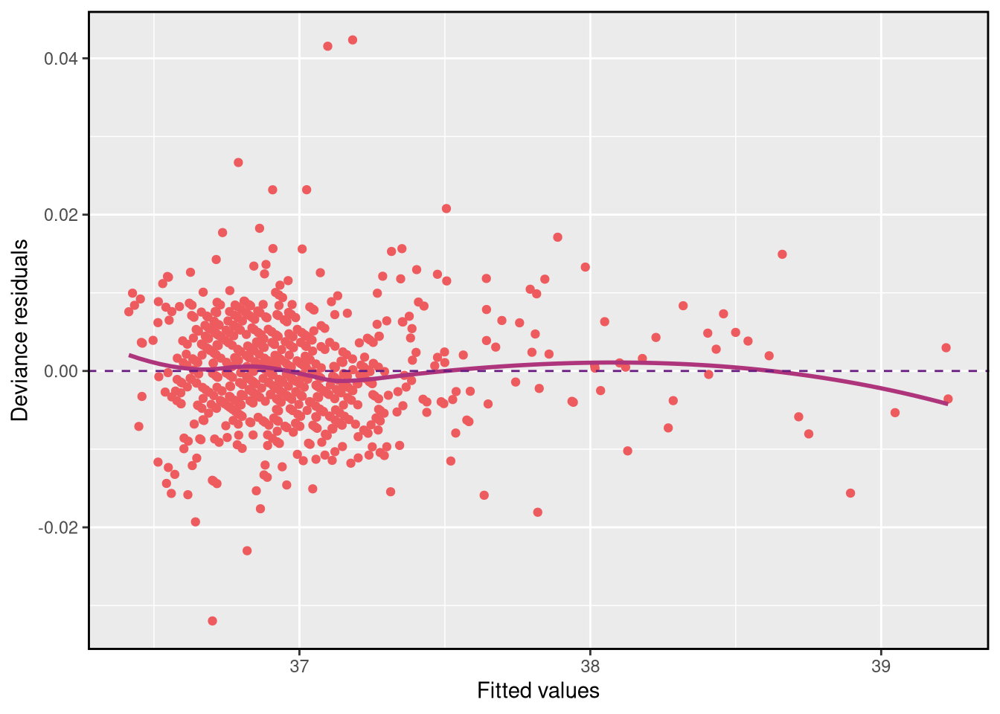
However, examining the deviance residuals against the predicted values shows that the model is still misspecified.
To address this, we could introduce nonlinear terms, such as squares, logarithms, or interaction terms between covariates. After trying some combinations and transformations, both straightforward and less conventional, the plot has gotten better after adding the intercation term of \(T_{OR1} \times canthi4Max1\)
The main issue now is the multicollinearity introduced by this term, as indicated by the VIF values below:
optim_nonlin_no_out_multicol_glm_gamma <- glm(
formula = aveOralM ~ Ethnicity_Asian + T_atm + T_Max1 +
T_OR1 * canthi4Max1,
family = Gamma(link = "log"),
data = df_dummies_no_out
)
vif(optim_nonlin_no_out_multicol_glm_gamma) |> t() |> kable()| Ethnicity_Asian | T_atm | T_Max1 | T_OR1 | canthi4Max1 | T_OR1:canthi4Max1 |
|---|---|---|---|---|---|
| 1.046538 | 1.106885 | 13.90125 | 2355.073 | 2115.675 | 7790.734 |
Fortunately, by simply centering both variables around their means, we eliminate the correlation between them and can fit the final model, which achieves a reduced AIC of \(106.69\).
vif(optim_nonlin_no_out_glm_gamma) |> t() |> kable()| Ethnicity_Asian | T_atm | T_Max1 | T_OR1_c | canthi4Max1_c | T_OR1_c:canthi4Max1_c |
|---|---|---|---|---|---|
| 1.046538 | 1.106885 | 13.90125 | 5.290777 | 6.726392 | 1.311679 |
summary(optim_nonlin_no_out_glm_gamma)
Call:
glm(formula = aveOralM ~ Ethnicity_Asian + T_atm + T_Max1 + T_OR1_c *
canthi4Max1_c, family = Gamma(link = "log"), data = df_dummies_no_out)
Coefficients:
Estimate Std. Error t value Pr(>|t|)
(Intercept) 3.1236609 0.0781186 39.986 < 2e-16 ***
Ethnicity_Asian 0.0016665 0.0006210 2.683 0.00746 **
T_atm -0.0012309 0.0002087 -5.898 5.77e-09 ***
T_Max1 0.0142998 0.0021476 6.658 5.66e-11 ***
T_OR1_c 0.0036367 0.0011459 3.174 0.00157 **
canthi4Max1_c 0.0025665 0.0013768 1.864 0.06273 .
T_OR1_c:canthi4Max1_c 0.0054751 0.0006773 8.084 2.82e-15 ***
---
Signif. codes: 0 '***' 0.001 '**' 0.01 '*' 0.05 '.' 0.1 ' ' 1
(Dispersion parameter for Gamma family taken to be 4.861609e-05)
Null deviance: 0.111161 on 694 degrees of freedom
Residual deviance: 0.033354 on 688 degrees of freedom
AIC: 96.584
Number of Fisher Scoring iterations: 3Even after removing the high-leverage extreme values, the Q–Q plot remains virtually unchanged. A likely explanation is that we are sacrificing a substantial amount of the model’s predictive power by restricting ourselves to a small subset of variables in order to maintain interpretability.
qq_resid <- data.frame(
qq_resid = qresid(optim_nonlin_no_out_glm_gamma)
)
qq_resid |>
ggplot() +
stat_qq_line(aes(sample = qq_resid), color = vir_col[15], lwd = 1) +
stat_qq(aes(sample = qq_resid), color = vir_col[10]) +
theme(panel.border = element_rect(color = "black", linewidth = 1, fill = NA))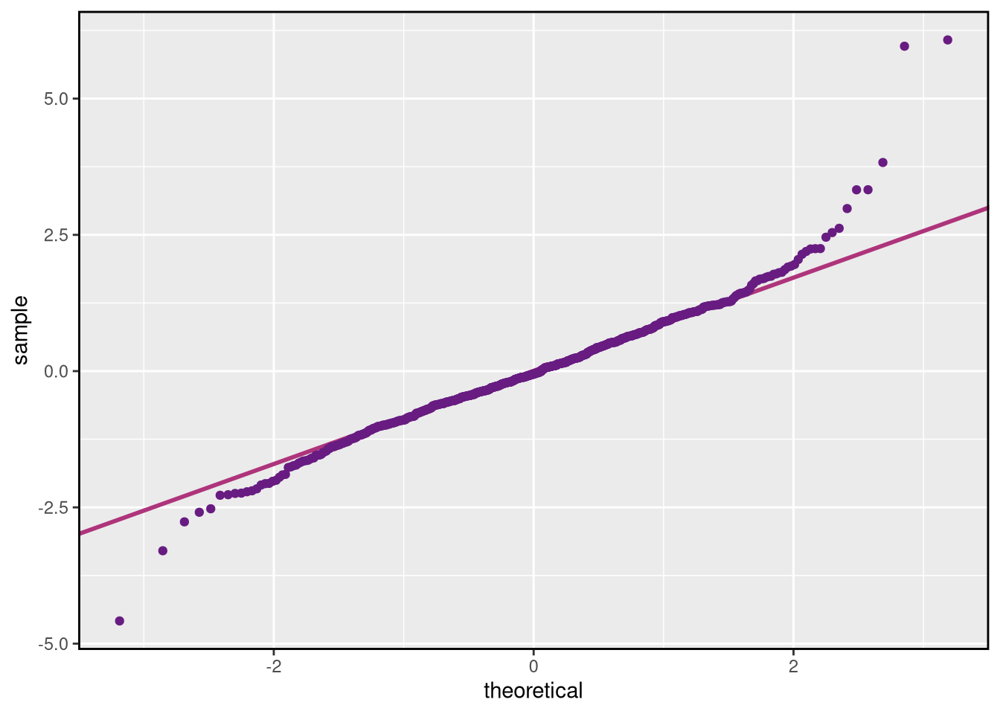
In this case, removing the extreme values is not correct, because a model with more variables or additional ways to explore the data might be able to predict these observations. This suggests that the high-leverage points are not problematic on their own - rather, our model is designed for simplicity and interpretability (variance vs bias problem).
For this reason, our final model will be trained on the dataset that includes the extreme values:
mean_T_OR1 <- df_dummies$T_OR1 |> mean()
mean_canthi4Max1 <- df_dummies$canthi4Max1 |> mean()
mean_T_atm <- df_dummies$T_atm |> mean()
mean_T_Max1 <- df_dummies$T_Max1 |> mean()
final_df <- df_dummies |>
mutate(
T_OR1_c = T_OR1 - mean_T_OR1,
canthi4Max1_c = canthi4Max1 - mean_canthi4Max1,
T_atm_c = T_atm - mean_T_atm,
T_Max1_c = T_Max1 - mean_T_Max1
)
final_model <- glm(
formula = aveOralM ~ Ethnicity_Asian + T_atm_c + T_Max1_c +
T_OR1_c * canthi4Max1_c,
family = Gamma(link = "log"),
data = final_df
)
summary(final_model)
Call:
glm(formula = aveOralM ~ Ethnicity_Asian + T_atm_c + T_Max1_c +
T_OR1_c * canthi4Max1_c, family = Gamma(link = "log"), data = final_df)
Coefficients:
Estimate Std. Error t value Pr(>|t|)
(Intercept) 3.6104303 0.0004286 8424.390 < 2e-16 ***
Ethnicity_Asian 0.0017106 0.0008141 2.101 0.0360 *
T_atm_c -0.0011720 0.0002713 -4.320 1.79e-05 ***
T_Max1_c 0.0160020 0.0027755 5.766 1.22e-08 ***
T_OR1_c 0.0030193 0.0015068 2.004 0.0455 *
canthi4Max1_c 0.0021678 0.0017693 1.225 0.2209
T_OR1_c:canthi4Max1_c 0.0046391 0.0007062 6.569 9.83e-11 ***
---
Signif. codes: 0 '***' 0.001 '**' 0.01 '*' 0.05 '.' 0.1 ' ' 1
(Dispersion parameter for Gamma family taken to be 8.474271e-05)
Null deviance: 0.163585 on 709 degrees of freedom
Residual deviance: 0.059213 on 703 degrees of freedom
AIC: 491.56
Number of Fisher Scoring iterations: 3final_cooks_df <- data.frame(
index = 1:length(cooks.distance(final_model)),
cooks_distance = cooks.distance(final_model),
qq_resid = qresid(final_model),
theoretical_q = qqnorm(qresid(final_model), plot.it = FALSE)$x
)
models_final_df = data.frame(
optim_nonlin_fitted_glm =
final_model$fitted.values,
optim_nonlin_residuals_glm_dev =
resid(final_model, type = "deviance")
)
models_final_df |>
ggplot(aes(x = optim_nonlin_fitted_glm, y = optim_nonlin_residuals_glm_dev)) +
geom_point(color = vir_col[20]) +
geom_smooth(method = "loess", formula = y ~ x, se = FALSE, color = vir_col[15]) +
geom_hline(yintercept = 0, linetype = "dashed", color = vir_col[10]) +
labs(x = "Fitted values", y = "Deviance residuals") +
theme(panel.border = element_rect(color = "black",
linewidth = 1, fill = NA))
final_cooks_df |>
ggplot() +
geom_text(
data = subset(final_cooks_df, cooks_distance > cook_threshold),
aes(x = theoretical_q, y = qq_resid, label = index),
vjust = -1, hjust = 1
) +
stat_qq_line(aes(sample = qq_resid), color = vir_col[15], lwd = 1) +
stat_qq(aes(sample = qq_resid), color = vir_col[10]) +
geom_point(data = subset(final_cooks_df, cooks_distance > cook_threshold),
aes(x = theoretical_q, y = qq_resid),
color = vir_col[20], size = 3,
fill = vir_col[20], alpha = 0.6) +
theme(panel.border = element_rect(color = "black", linewidth = 1, fill = NA))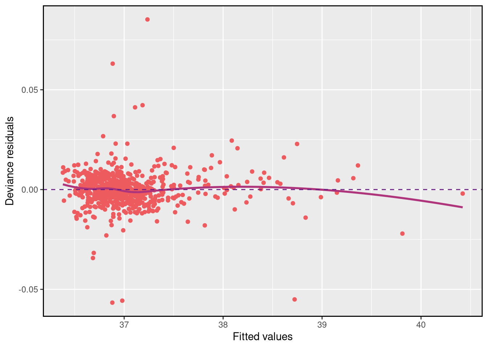
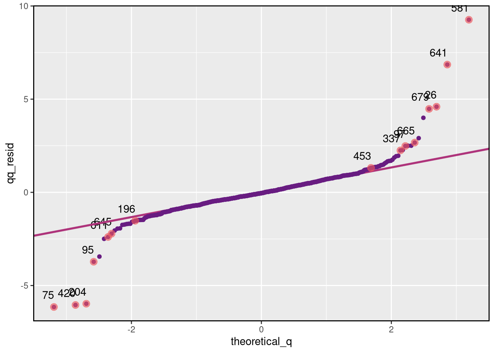
cv_results <- cv.glm(data = final_df, glmfit = final_model, K = 10)
cv_results$delta[2] |> sqrt()[1] 0.3439766The final model primarily relies on other temperature variables, with only Asian ethnicity showing a noticeable effect on the outcome. Since all final covariates are centered around zero, the intercept must be interpreted differently:
| Variable | Description | Estimate |
|---|---|---|
| Intercept term | Basis temperature | \(exp(\widehat{\beta}_0) = 36.98\) |
| \(Ethnicity_{Asian}\) | Asian ethnicity on average increases the temperature | \(exp(\widehat{\beta}_1) = 0.171 \%\) |
| \(T_{atm}-c\) | Ambient temperature has a very small negative effect | \(exp(\widehat{\beta}_2) = -0.117 \%\) |
| \(T_{Max1}-c\) | Maximum face temperature has the strongest effect | \(exp(\widehat{\beta}_3) = 1.613 \%\) |
The interaction term offers valuable insight into the temperature scanning. If only one region, either the mouth or the canthi, shows high temperatures, the outcome temperature does not change significantly. It is only when both regions exhibit elevated temperatures that the model registers a substantial increase, indicating a situation where the person does not simply have a single randomly hotter spot.
Because our initial model did not achieve the quality we hoped for, we experimented with several alternative approaches, focusing mainly on tree-boosting methods such as XGBoost and LightGBM. We also tested a recently introduced transformer-based architecture for tabular data, known as TabPFN.
The tree-boosting models required hyperparameter tuning, but given the small size of our dataset, this was straightforward and took no more than a minute using a simple grid search with 5-fold cross-validation. In contrast, TabPFN works entirely out of the box and requires no tuning at all, which completely removes the need to think about optimization.
The results were surprising. Despite being far more complex, these advanced models did not achieve noticeably better performance. In the end, our simple GLM proved to be fully competitive with them.
| Model | Hyperparameters | RMSPE |
|---|---|---|
| GLM | - | 0.3444 |
| XGBoost | \(\eta = 0.01\), depth = 1, bag = 0.7, feature = 0.9 | 0.345 |
| LightGBM | \(\eta = 0.05\), max_leaves = 31, bag = 0.8, feature = 0.9 | 0.3587 |
| TabPFN | - | 0.3416 |
numerical_cols <- df |> select(where(is.numeric)) |> colnames()
predictor_num_cols <- numerical_cols[numerical_cols != "aveOralM"]
predictor_cat_cols <- df |> select(where(is.factor)) |> colnames()
df_centered <- df %>%
mutate(
across(
.cols = all_of(predictor_num_cols),
.fns = ~ . - mean(.)
),
across(
.cols = all_of(predictor_cat_cols),
.fns = ~ as.integer(.) - 1
)
)library(xgboost)
param_grid <- expand.grid(
learning_rate = c(0.01, 0.05, 0.1),
max_depth = c(1),
feature_fraction = c(0.2, 0.5, 0.9),
bagging_fraction = c(0.7, 0.8, 1.0)
)
all_predictor_cols <- c(predictor_cat_cols, predictor_num_cols)
X <- as.matrix(df_centered |> select(all_of(all_predictor_cols)))
y <- df_centered |> pull(aveOralM)
xgb_train <- xgb.DMatrix(data = X, label = y)
results_xgboost <- data.table()
for (i in 1:nrow(param_grid)) {
p <- param_grid[i, ]
params <- list(
objective = "reg:squarederror",
eta = p$learning_rate,
max_depth = p$max_depth,
subsample = p$bagging_fraction,
colsample_bytree = p$feature_fraction
)
cv_results <- xgb.cv(
params = params,
data = xgb_train,
nfold = 5,
nrounds = 1500,
metrics = "rmse",
early_stopping_rounds = 10,
verbose = TRUE,
showsd = TRUE
)
results_xgboost <- rbind(results_xgboost, cv_results$evaluation_log[cv_results$best_iteration, ])
}
# best 0.345 0.01 1 0.9 0.7
# best 0.345 0.05 1 0.9 1.0library(lightgbm)
all_predictor_cols <- c(predictor_cat_cols, predictor_num_cols)
X <- as.matrix(df_centered |> select(all_of(all_predictor_cols)))
y <- df_centered |> pull(aveOralM)
lgb_train <- lgb.Dataset(
data = X,
label = y,
categorical_feature = predictor_cat_cols
)
param_grid <- expand.grid(
learning_rate = c(0.01, 0.05, 0.1),
num_leaves = c(15, 31, 63),
feature_fraction = c(0.7, 0.9),
bagging_fraction = c(0.8, 1.0)
)
param_grid_results <- param_grid
param_grid_results$results <- rep(0, param_grid |> nrow())
param_grid_results$index <- rep(0, param_grid |> nrow())
best_score <- Inf
best_params <- list()
for (i in 1:nrow(param_grid)) {
p <- param_grid[i, ]
current_params <- list(
objective = "regression",
metric = "rmse",
boosting = "gbdt",
verbose = 10,
learning_rate = p$learning_rate,
num_leaves = p$num_leaves,
feature_fraction = p$feature_fraction,
bagging_fraction = p$bagging_fraction
)
cv_result <- lgb.cv(
params = current_params,
data = lgb_train,
nfold = 5,
nrounds = 400,
early_stopping_rounds = 10,
eval_freq = 1
)
min_rmse_index <- cv_result$best_iter
current_score <- cv_result$best_score
param_grid_results$results[i] <- current_score
param_grid_results$index[i] <- min_rmse_index
if (current_score < best_score) {
best_score <- current_score
best_params <- p
best_params$nrounds <- min_rmse_index
}
}
# learning_rate num_leaves feature_fraction bagging_fraction results index
# 14 0.05 31 0.9 0.8 03587548 57